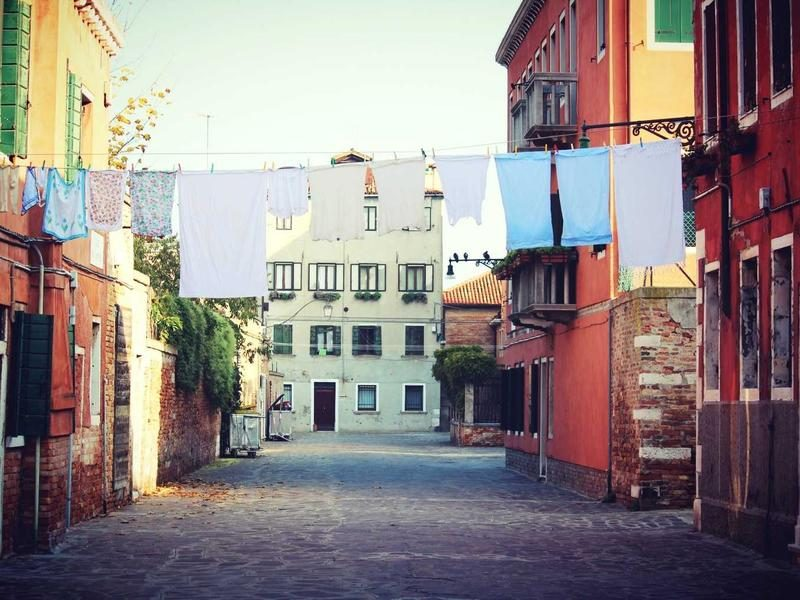
4 November 2026
Frame One names five studios to watch in 2027
Independent design publication Frame One shared its guide to the year ahead, covering the studios and practitioners on its radar — the studio among them.
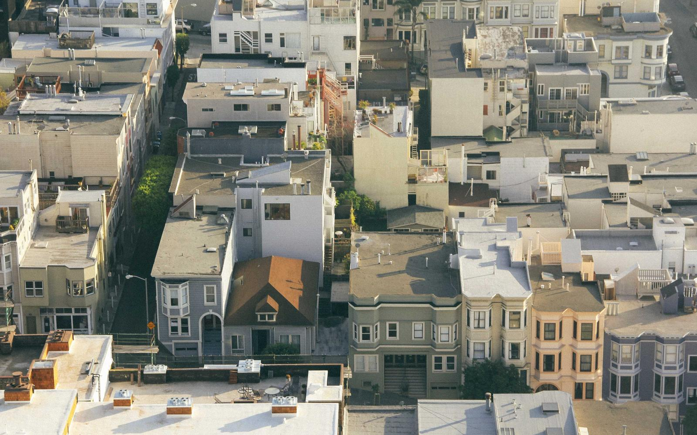

4 November 2026
Independent design publication Frame One shared its guide to the year ahead, covering the studios and practitioners on its radar — the studio among them.
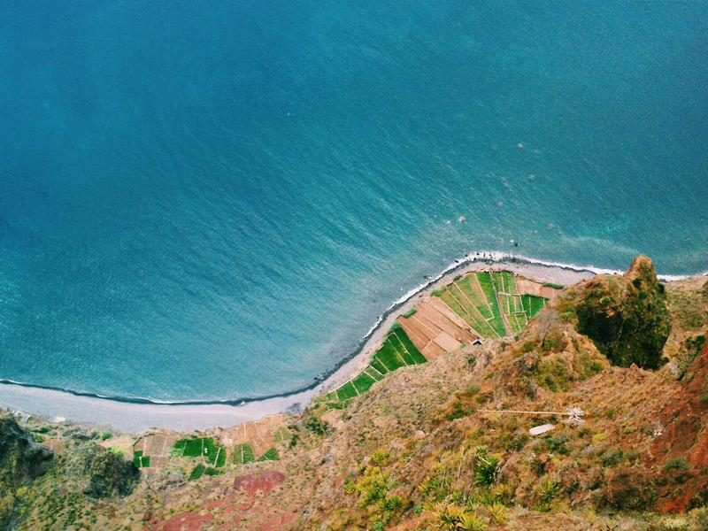
16 October 2026
The Museu Lume brand identity took two Gold and two Silver trophies at this year’s Prisma Awards — the most awarded project in our archive.
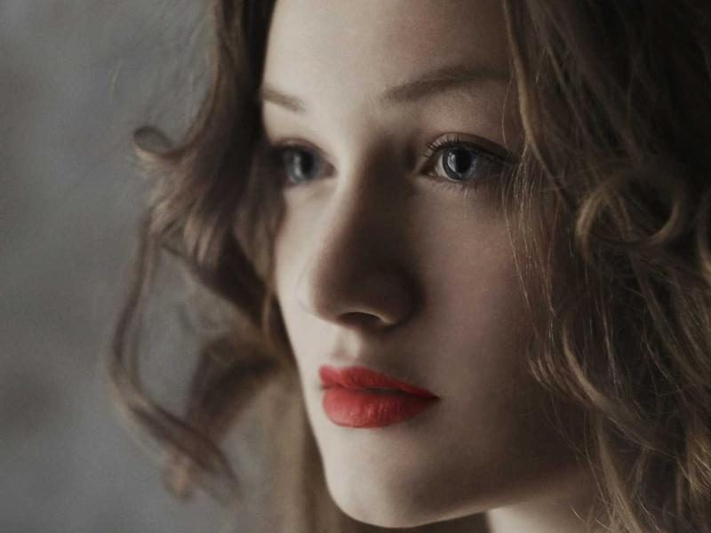
16 October 2026
Setting Press’s latest release follows the return of serif typefaces in contemporary design, pairing an interview with the studio alongside a selection of branding and editorial work. Available now from Setting Press.
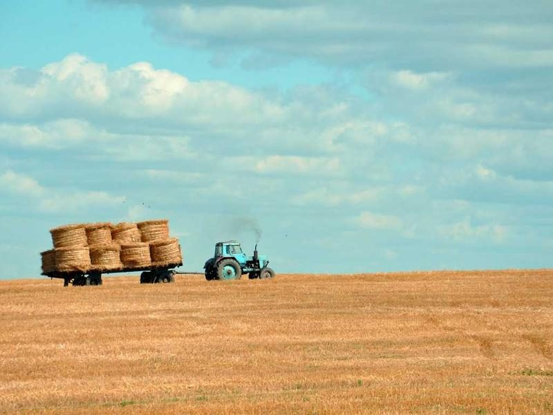
15 October 2026
In a wide-ranging conversation, our Strategy Director talks about radical restraint — cutting a global campaign down to a single word, and building identity systems that outlive their launch.
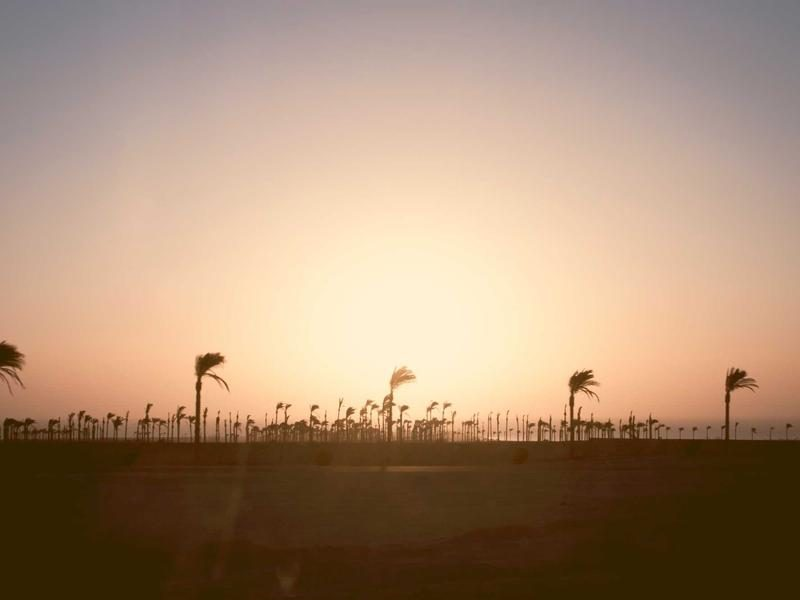
8 October 2026
Design Director Priya Raman and Associate Director Nico Albuquerque take the stage at Litoral Festival in Portugal, 14–15 November 2026, on systems that hold brand and product together.
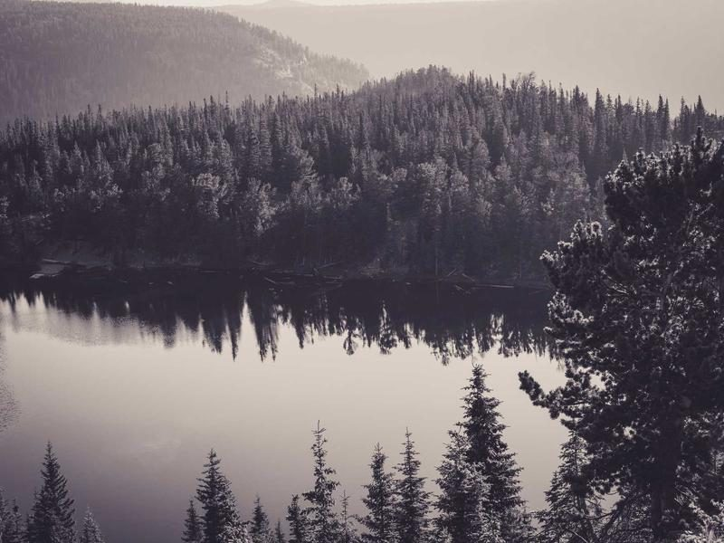
7 October 2026
Congratulations to senior designer Sofia Marchetti, recognised among this year’s Prisma Young Talents for emerging voices in Latin American design.
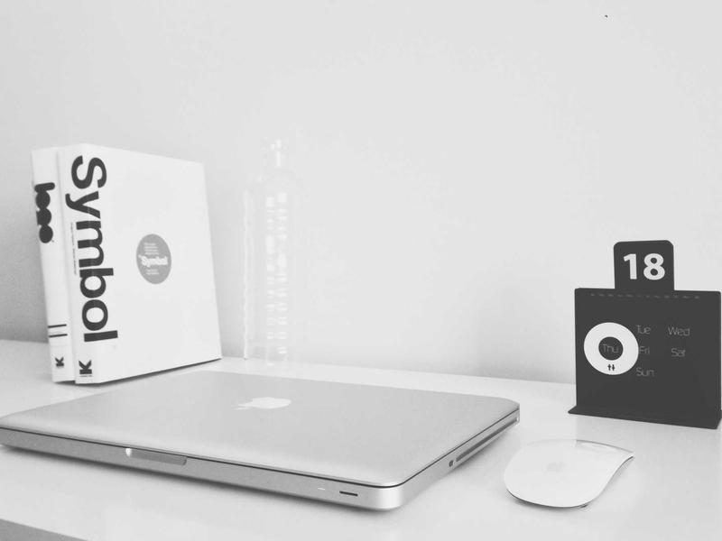
24 September 2026
Business Director Ada Lindqvist and Design Director Priya Raman join the lineup at Shared Table London on 14 October, on how design craft moves culture.
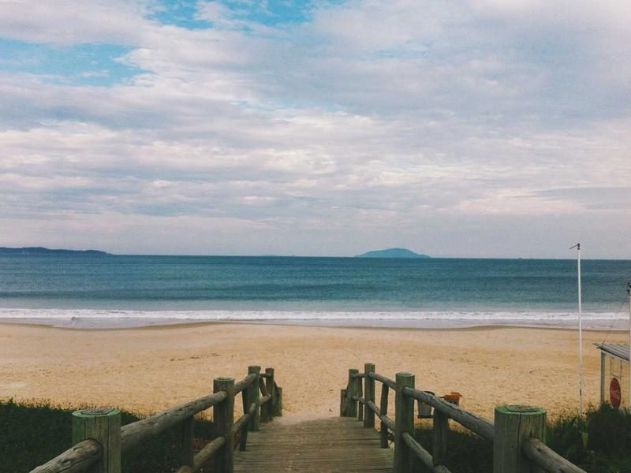
17 September 2026
Associate Director Nico Albuquerque will help judge the 2027 edition, celebrating emerging creatives across design, illustration, art direction, and more.
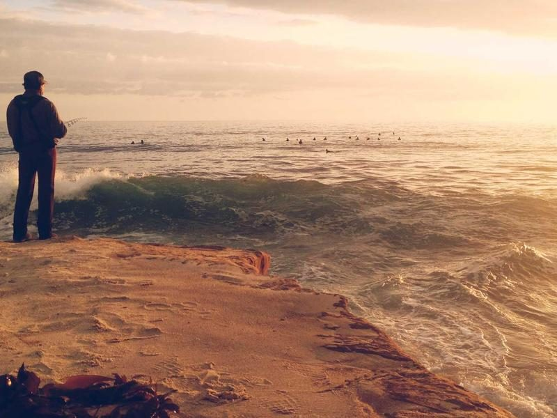
13 October 2026
For the third time, the studio has been named Latin Studio of the Year at the Prisma Awards — a moment to thank the team, our roots, and the work still to come.
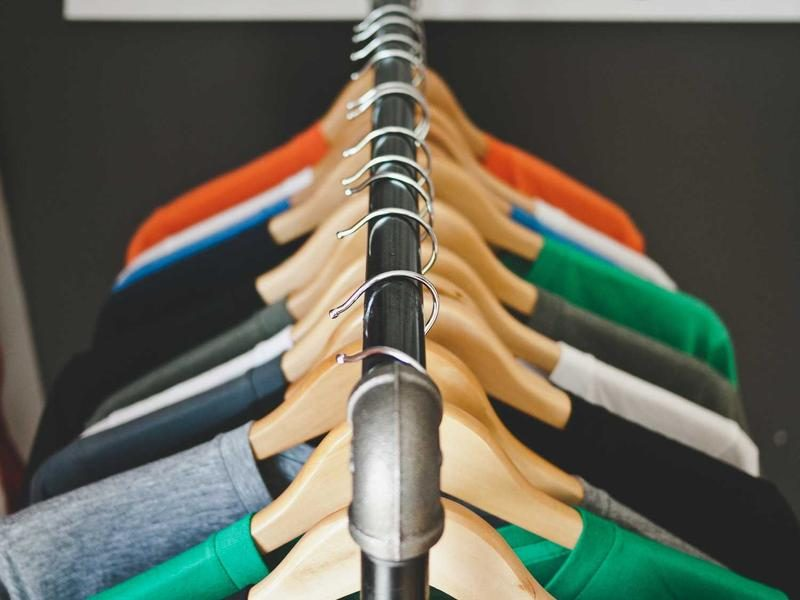
11 September 2026
Seven years after their first talk at MOTIF Barcelona, founders Diana Sampaio and Marcus Oyelaran return to headline the festival’s 26th edition, 6–8 May 2027.